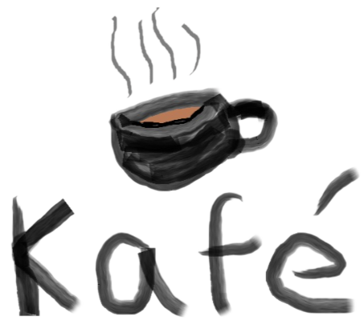

Seja bem vindo(a)
Bebidas
- Suco de maracujá
Ingredientes:
- Maracujá
- Agua
- Cafe
Acompanhamentos:
- Creme
- leite
- Chá gelado
Sabores:
- Mate
- Verde
Salgados
- Coxinha
Sabores:
- Frango
- Queijo
- Esfiha
Sabores:
- Carne
- Alergicos: Contem Gluten
- Queijo
- Alergicos: Contem Gluten
- Empada
Sabores:
- Camarão
Doçes
- Torta de limão
Ingredientes:
- Limão
- Açucar
- Leite Condensado
- Trigo
- Manteiga
- Brigadeiro
Ingredientes:
- Leite Condensado
- Chocolate em pó
- Menteiga
- Pudim
Ingredientes:
- Leite Condensado
- Leite
- Ovos
| Horarios |
Segunda |
Terça |
Quarta |
Quinta |
Sexta |
Sábado |
Domingos e Feriados |
| Manhã |
08:00 - 12:00 |
Fechado |
08:00 - 12:00 |
08:00 - 12:00 |
08:00 - 12:00 |
08:00 - 12:00 |
08:00 - 12:00 |
| Tarde |
14:00 - 18:00 |
14:00 - 18:00 |
14:00 - 18:00 |
14:00 - 18:00 |
14:00 - 18:00 |